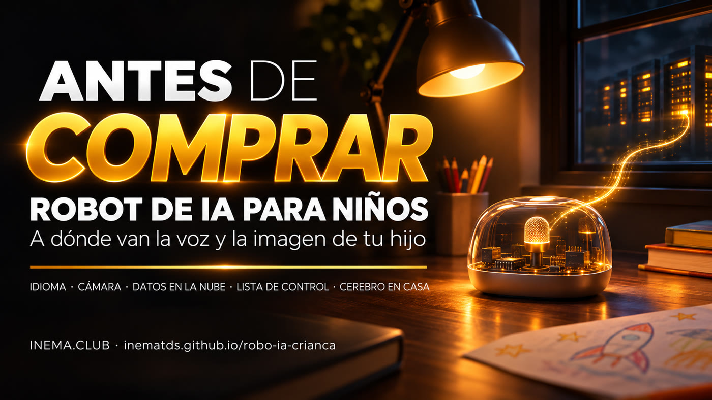

Parece un juguete. Por dentro, es un micrófono conectado a internet que envía la voz de tu hijo a un servidor al otro lado del mundo.

Esta guía explica qué son los robots de IA baratos para niños que aparecen en marketplaces brasileños. No tienen inteligencia dentro: graban la voz (y, en algunos modelos, la imagen) y la envían por internet a servicios de IA en China, que responden con voz. Aquí verás los riesgos, un checklist para usar antes de comprar, los cuidados si ya lo compraste y un camino, todavía por probar, para que el «cerebro» funcione en tu propia computadora. No necesitas saber nada de tecnología: solo leer.
El 07/11/2026 revisamos anuncios de robots de IA para niños en un gran marketplace brasileño. Encontramos dos tipos. Lo que sigue es lo que dicen los propios anuncios.
Diseño de robot de caricatura, con audífonos y ojos LED. La imagen del anuncio, en inglés, promete «conversación con IA para niños de 3 a 12 años», en mandarín, inglés y cantonés, con «acceso a 4 grandes modelos de IA»: Doubao, DeepSeek, Wenxin (Baidu) y Tongyi Qianwen (Alibaba). También incluye la etiqueta «Overseas Version».
Pequeño y con forma de saquito de frijoles. El anuncio dice que funciona con el motor DeepSeek AI y «visión de máquina»: le muestras un objeto y te dice qué es y te lo explica.
Separamos lo probable (lo que indican el hardware y los anuncios) de lo confirmado (proyectos públicos que puedes revisar). Todavía no abrimos ninguno de estos robots.
Una pequeña placa ESP32-S3 con micrófono, altavoz y una pantallita que hace de «ojos», que usa el ecosistema abierto llamado XiaoZhi. La placa solo graba, envía y reproduce la respuesta. Estas placas se venden por separado por US$ 8 a 18 (por ejemplo: SpotPear AI-BOX). Solo lo confirmaremos al abrir el robot.
Existe un servidor abierto, xiaozhi-esp32-server (licencia MIT), que puedes instalar en casa. Acepta modelos locales mediante Ollama, reconocimiento de voz local (FunASR, Sherpa) y varias voces sintéticas. También existe OpenToys, con ESP32-S3 y Whisper funcionando en la computadora (centrado en Mac con chip Apple).
Doubao es de ByteDance, la empresa dueña de TikTok. Wenxin es de Baidu y Tongyi Qianwen, de Alibaba.
No se trata de entrar en pánico. Se trata de saber qué estás poniendo en el cuarto de tu hijo.
El anuncio del robot «mecha» menciona solo mandarín, inglés y cantonés; el de Bean Bun no indica el idioma. Para un niño que todavía está aprendiendo a hablar, esto limita mucho su uso y aumenta la posibilidad de malentendidos.
La voz del niño va a servidores en China. En los modelos con cámara también podrían enviarse imágenes del interior de la casa y de su rostro. No hay una política de privacidad clara en portugués, así que no sabes cuánto tiempo se guardan los datos, si se usan para entrenar la IA ni quién puede acceder a ellos. En Brasil, los datos de los niños tienen protección especial bajo la LGPD (Ley General de Protección de Datos de Brasil) y el ECA (Estatuto del Niño y del Adolescente de Brasil).
Si el servicio cambia, empieza a cobrar o se apaga, el robot se convierte en un pisapapeles. No tienes control sobre eso.
Los modelos de IA que hay detrás no fueron creados para niños de Brasil. No sabemos qué filtros aplica el fabricante, si es que aplica alguno.
apps de juguetes de IA analizadas tenían rastreadores de terceros y pedían más permisos de los necesarios (Cybernews).
empresas de juguetes de IA registradas en China hasta octubre de 2025, además de pruebas con respuestas inseguras para niños (WIRED).
Mozilla recomienda en su guía «Privacy Not Included» leer la política de privacidad de cualquier dispositivo conectado antes de comprarlo.
Fuentes: reportaje de Cybernews sobre apps de juguetes de IA, reportaje de WIRED sobre juguetes de IA en China (datos hasta octubre de 2025) y la guía «Privacy Not Included» de Mozilla. Para consultarlas, busca el nombre de la fuente junto con «AI toys».
El problema no es el objeto. Es dejar al niño solo con él, conectado a internet, sin saber adónde van sus datos.
Como habla inglés, puede servir para practicar conversaciones, con un adulto al lado y por poco tiempo.
Abrirlo, entender la placa y cambiar el cerebro por uno que funcione en casa es un excelente proyecto de electrónica e IA para hacer con un adolescente.
Si el vendedor no sabe responder, eso ya es una respuesta. Versión para imprimir: docs/checklist.md (en portugués).
No necesitas conocimientos técnicos para seguirlos.
Conecta el robot a la red Wi-Fi de invitados del router, separada de tus computadoras y celulares. Busca «Rede de convidados» o «Guest» en la app o en la página del router; si no lo encuentras, pídele a tu proveedor de internet que la active.
Si tiene cámara, cúbrela con un pedazo de cinta aislante negra o desactívala en la configuración.
No dejes el robot en el cuarto del niño a la hora de dormir.
Úsenlo solo cuando haya un adulto en la misma habitación.
Enséñale al niño a no decirle al robot su nombre completo, su escuela ni su dirección.
En el celular, revisa a qué puede acceder la app (ubicación, contactos, fotos) y quítale los permisos que no necesite.
Cuando no lo estén usando, desconéctalo o quítale la batería.
Esta parte es para adolescentes o adultos con algo de experiencia en electrónica. Si no es tu caso, puedes saltártela. La idea es mantener el cuerpo barato del robot y cambiar el cerebro en la nube por uno que funcione en una computadora de tu casa. Guía técnica completa: docs/cerebro-local.md (en portugués).
Quita los tornillos (algunos modelos están pegados o encajados), ábrelo con cuidado y busca la inscripción «ESP32-S3» en el chip metálico de la placa. Toma una foto de la placa. Si tiene otro chip, esta guía no sirve.
Instala xiaozhi-esp32-server en una PC (el proyecto recomienda 4 núcleos y 8 GB de memoria), siguiendo su README, que tiene una versión en portugués. Configura todo localmente: voz a texto con FunASR o Whisper, el modelo de lenguaje con Ollama y una voz sintética en portugués.
# código del servidor (instalación: sigue el README del proyecto) git clone https://github.com/xinnan-tech/xiaozhi-esp32-server.git
Atención: la configuración «gratuita» que viene lista en el proyecto usa servicios en la nube para el modelo y la voz. Para que nada salga de casa, cambia cada componente por una opción local.
Conecta la placa a la PC con el cable USB, guarda una copia del programa original y graba el firmware XiaoZhi configurado con la dirección de tu servidor, en lugar de la del servidor del fabricante. Las instrucciones para grabarlo y dónde poner la dirección están en el README del firmware; añadiremos al manual técnico los detalles que descubramos durante la prueba.
# firmware abierto del ecosistema XiaoZhi git clone https://github.com/78/xiaozhi-esp32.git
Bloquea en el router el acceso del robot a internet y deja solo la red de casa. Si sigue respondiendo en portugués, el cerebro realmente está en casa.
Solo incluimos lo que dicen los anuncios y los proyectos. No sabemos cuánto cuestan estos robots en reales brasileños, así que no pusimos los precios. En el celular, desliza la tabla hacia un lado.
| Robot «mecha» | Bean Bun | Robot con cerebro local | |
|---|---|---|---|
| Idioma | Mandarín, inglés, cantonés | No se indica en el anuncio | Portugués, si funciona la guía (por probar) |
| Cámara | Solo en la versión roja y cuadrada | Sí («visión de máquina») | Depende de la placa; tú decides si la usas |
| Adónde van los datos | A la nube de servicios chinos (Doubao, DeepSeek y otros) | A la nube (motor DeepSeek) | Se quedan en la computadora de tu casa |
| Necesita internet | Sí | Sí | No; solo la red Wi-Fi de casa |
| Costo | Barato (precio sin confirmar) | Barato (precio sin confirmar) | El robot y una computadora que ya tengas; placas por separado de US$ 8 a 18 |
El robot forma parte de un movimiento más amplio: el hardware se volvió barato y lo que importa es quién procesa y guarda lo que dices.
Plaud NotePin S y Plaud One, con agente por voz: graban y envían el audio a la nube para resumirlo.
Amazon compró Bee. Meta compró Limitless en diciembre de 2025.
El anillo Stream, de Sandbar, y el dispositivo sin pantalla de OpenAI con Jony Ive, cuyo lanzamiento se aplazó hasta 2027.
Lanzamientos y compras anunciados entre 2025 y noviembre de 2026.
Computadoras de una empresa, en otro lugar, que reciben y procesan por internet lo que les envía el dispositivo.
Un chip barato con Wi-Fi que se usa en muchos dispositivos conectados. Probablemente sea el «cuerpo electrónico» de estos robots.
El programa grabado dentro de la placa. Decide a qué servidor envía el robot la voz.
La computadora que recibe la voz y devuelve la respuesta. Puede ser de la empresa (en la nube) o tuya (en casa).
Programa gratuito que ejecuta modelos de IA en tu propia computadora, sin internet.
Programas que convierten el habla en texto. Funcionan en la computadora de casa.
Programa que convierte texto en voz: es la «voz» del robot.
Licencia de código abierto: cualquiera puede usar, estudiar y modificar el código.
Persona a la que le gusta armar, abrir y modificar dispositivos por su cuenta.